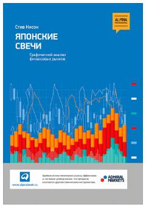

ЯСMoliya bozorlarida yapon shamchalari yordamida grafik tahlil qilish bo'yicha klassik qo'llanma.
Ushbu kitob moliya bozorlarida texnik tahlilning samarali usuli bo'lgan yapon shamchalari (yapon svechalari) tizimini batafsil yoritib beradi. Muallif treyderlarga bozor psixologiyasini tushunish, trendlarning burilish nuqtalarini aniqlash va savdo bitimlarini to'g'ri amalga oshirish bo'yicha amaliy ko'nikmalarni taqdim etadi.